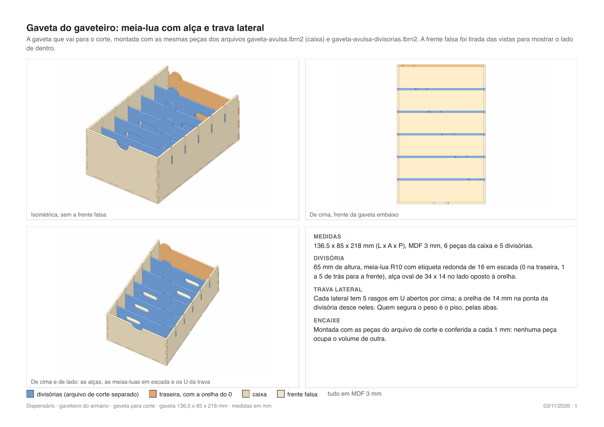
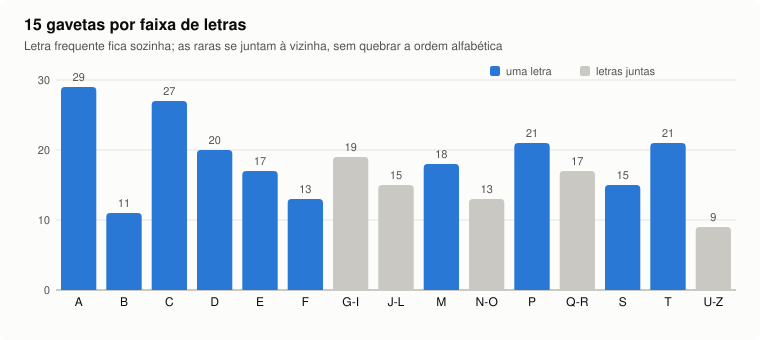

O problema
Levantamento feito com o Instituto Mário Penna em 20 de agosto de 2026.
No Hospital Luxemburgo, que atende só pelo SUS, a medicação sai de farmácias centrais. O profissional vai até lá, bipa o crachá, bipa o item e leva até o leito. O registro de quem pegou existe, mas a fila na farmácia central atrasa a separação, e o caminho entre a retirada e a administração fica sem controle.
O que dói
- Controle forte de custo e fraco de uso.
- Dificuldade de provar que o item chegou ao paciente.
- Atraso pesa: no paciente diabético, uma hora de diferença na insulina já importa.
Por que não comprar pronto
As soluções comerciais citadas na visita são de poucas empresas e chegam a cerca de R$ 4 milhões, fora da realidade de um hospital 100% SUS. O protótipo precisa ser barato, auditável e montável com a marcenaria e a eletrônica que o próprio Instituto tem.
A solução e o escopo
Uma unidade por cerca de 20 leitos, reposta pela logística duas vezes ao dia.
| Faz parte do protótipo | Fica fora | Desejável |
|---|---|---|
| Digital individual, senha só como alternativa · fechadura liberada após autenticação · estado da porta e alerta sonoro discreto · registro de dispensário, profissional, data, hora e método · envio dos eventos ao servidor | Prescrição, baixa e saldo (continuam no sistema do hospital) · climatização e itens refrigerados · trava por compartimento | Monitor touch com a prescrição do paciente |
A topologia é em estrela: cada dispensário fala só com a farmácia central ou com a subfarmácia, nunca com outro dispensário. Quem abre alcança todo o conteúdo; a rastreabilidade vem do registro de cada abertura, que o hospital cruza com as câmeras que já tem.
Entregáveis escritos: Fase 1 (26/08/2026, problema, proposta e 13 requisitos funcionais e 14 não funcionais) e o documento de componentes e requisitos de software (08/09/2026: máquina de estados, contrato hardware e software, 12 critérios de aceite).
Arquitetura
Estado da bancada em 06/11/2026 e do servidor em 08/11/2026.
O Mega decide tudo localmente e continua funcionando sem rede. A ESP32-CAM recebe cada evento pela serial, tira uma foto quando o acesso é autorizado e entrega evento e foto ao servidor, guardando numa fila enquanto a rede estiver fora. O servidor na nuvem substitui, no protótipo, a API do sistema hospitalar, que é a integração prevista para a versão real.
Componentes
Lista fechada em 22/10/2026, com a fonte de cada medida usada no desenho.
| Componente | Uso | Medida que entrou no gabinete e fonte |
|---|---|---|
| LCD 1602A Ver5.5 | mensagens ao usuário | furos 75 x 31 (4 datasheets concordam); moldura pela foto da peça, porque os datasheets dão ~71 x 24 e a peça tem ~76 x 25 |
| Teclado matricial 4x4 rígido | senha e menu | recorte 60 x 57 R4 e furos 60 x 59 do Multicomp MCAK1604NBWB e do Accord AK-1604 (mesmo corpo) |
| Leitor de digital R307S | autenticação | corpo do manual da Grow; colado na frente, vão final de 20 x 18 mm (06/11). O firmware usa a biblioteca da Adafruit, compatível |
| LED RGB 5 mm | estado (verde, vermelho, espera) | furo de 5,0 mm; 330 Ω por canal |
| Fechadura elétrica 12 V / 2 A | trava da porta | corpo da DFRobot FIT0620 (73 x 58 x 13,3, 3 M4), conferido com régua em 28/10; batente 34,65 x 20 x 1,6 |
| 2 botões de pressão | porta aberta ou forçada | furo de 10,1 e rebaixo de 13,05, saídos de réguas de teste cortadas |
| Arduino Mega 2560 | controle | alimentado pelo VIN em 12 V |
| ESP32-CAM (OV2640) | rede e foto | furo de 12,5 para a lente, ao lado da tela |
| Relé GBK P5 (1 canal) | aciona a fechadura | ativo em HIGH, casa com o pull-down do pino; diodo 1N4007 na bobina pendente |
| LM2596 + MB102 | alimentação | 12 V para 7,0 V (medido), depois 5 V e 3,3 V |
A ponte de MDF entre os furos do teclado e o vão ficou em 0,95 mm, abaixo do piso de 1,5 mm do projeto. É uma exceção aceita em 01/10/2026, declarada na especificação e impressa a cada geração. Detalhe em docs/componentes.md.
Gabinete
Dois módulos de MDF 3 mm, em lâmina dupla nas paredes, unidos por abraçadeiras de nylon em rasgos, sem parafuso estrutural.
Módulo biométrico
250 x 250 x 1000 mm. Na frente fica o sub-painel com a interface organizada pelo uso: em cima a parte de ver (tela, LED e câmera) e embaixo a de agir (teclado e leitor), na faixa de 800 a 1000 mm do piso recomendada pelas normas de acessibilidade consultadas.
Módulo armário
750 x 1000 x 250 mm, com nicho interno suspenso em cinco lados, porta de MDF com miolo de acrílico de 1,5 mm e logo do Instituto, 6 dobradiças, fechadura de pé na lateral e 2 botões de porta na moldura.

Gaveteiro por letra
O nicho virou um gaveteiro de apotecário: grade de ripas a meia-madeira, 15 gavetas iguais (136,5 x 85 x 218 mm) em cima e 15 vãos abertos embaixo. A divisão das gavetas saiu da RENAME 2024: 265 princípios ativos em comprimido ou cápsula, agrupados por letra inicial. Letra frequente fica sozinha e as raras se juntam à vizinha, sem quebrar a ordem alfabética. Divisórias com trava lateral funcionam como índice de dicionário, em jogos completos proporcionais ao número de ativos.


Placa do projeto

Fabricação
Laser CO2 eCNC L-1210 do laboratório do Ibmec, mesa de 1150 x 1000, arquivos enviados pelo LightBurn.
- Gerador paramétrico. Cada peça nasce de uma especificação em JSON; corrigir uma cota é trocar um número e gerar de novo. Juntas de dedos pela matriz do TabbedBoxMaker.
- Parâmetros medidos, não chutados. As matrizes de velocidade e potência cortadas na própria máquina mostraram que ela rende abaixo da tabela do fabricante: o MDF 3 mm corta a 10 mm/s e 74,5% (tabela: 26/65).
- Teste antes da peça. Fechadura, botões, dobradiça e interface passaram por cupons de teste antes do corte final.
- Rota calculada. Desde 04/11/2026 a ordem das peças e o ponto de entrada de cada contorno são calculados para reduzir o deslocamento com o laser desligado (de 21,5 m para 7,7 m numa das mesas), e o otimizador do LightBurn fica desligado para obedecer o arquivo.
Software
Firmware e servidor por Marcelo; publicação na nuvem com HTTPS em 07 e 08/11/2026.
Firmware
- Mega: digital, senha e cartão, teclado, LCD, LED, buzzer, porta e fechadura, com
LOCK_MODE = 0até a bancada liberar. - ESP32-CAM: fila de eventos, foto com prova de frescor pedida ao Mega, NTP e atualização pelo Wi-Fi.
- Testes com dublês e simulação no Wokwi.
Servidor
- Python só com biblioteca padrão, SQLite, painel web.
- Na nuvem atrás do Caddy, certificado Let's Encrypt, senha do navegador antes do PIN, limite de tentativas por IP.
- A CAM confere o certificado pelas raízes ISRG embutidas no firmware.
Linha do tempo
O que aconteceu e quando.
- Visita técnica e entrevista com o Instituto Mário Penna em aula.
- Fase 1 entregue: problema, proposta e requisitos.
- Chassi modular em MDF; primeiras peças do biométrico cortadas.
- Documento de componentes e requisitos de software.
- Repositórios públicos do chassi e do design system.
- Vãos do LCD e do teclado na frente do biométrico.
- Módulo armário de 750 x 1000 x 250 que cabe inteiro na mesa.
- Simulação 3D do armário aprovada.
- Lista de componentes fechada; firmware e servidor publicados pelo Marcelo.
- Interface organizada por altura de uso; matrizes de corte; fechadura, botões e dobradiça testados e aprovados.
- Nicho suspenso cortado; desenho da porta escolhido entre 41 variações.
- Gaveteiro por letra; dia inteiro de máquina com gavetas, porta e rota de corte calculada.
- Bancada remontada com 12 V, regulador e relé; frente do biométrico refeita com componentes colados.
- Servidor na nuvem com HTTPS, backup e domínio próprio; placa do projeto.
- planejado Primeira gravação da CAM em HTTPS e teste ponta a ponta.
Repositórios
| Repositório | Conteúdo | Licença |
|---|---|---|
| joshazze/dispensario-modulos | Gerador do chassi, especificação, arquivos de corte, testes e esta página | GPL v2 |
| joshazze/dispensario-design-system | Vocabulário construtivo: medidas, componentes de chapa e figuras cotadas | MIT |
| marceloxreis/sistema-embarcados | Firmware do Mega e da ESP32-CAM, servidor, testes, montagem e validação | do autor |
| Pull request #1 | Servidor na nuvem com HTTPS, TLS na CAM, backup e teste do servidor sem placa |
Parte do trabalho do armário (porta, gaveteiro e placa) ainda está numa branch local e entra no repositório público depois de revisada.
Pendências e riscos
Para a apresentação
- Teste da bancada bloco a bloco com o firmware rodando.
- Diodo 1N4007 na bobina da fechadura.
- CAM em HTTPS com a câmera ligada.
- Últimas mesas de corte: fundo da porta com as divisórias e as 6 caixas de gaveta restantes.
- Cupom de calibração: kerf e espessura do MDF ainda são estimados.
Para a versão real
- API do sistema hospitalar: documentação e contato técnico.
- Como o sistema sabe o que saiu, já que quem abre alcança tudo.
- Crachá contra digital, por causa da luva de procedimento.
- Comportamento sem rede: travar ou liberar com sincronização posterior.
- Teto de custo por unidade.
Fontes
| Fonte | O que deu |
|---|---|
| Entrevista com o Instituto Mário Penna, 20/08/2026, e quatro transcrições das gravações | problema, escopo, requisitos, fluxo atual |
| Tinsharp TC1602A-01T, EONE 1602A-1, HJ1602A, Waveshare LCD1602 | furação e placa do LCD |
| Multicomp MCAK1604NBWB, Accord AK-1604 | recorte e furação do teclado |
| Manual do leitor R307S (Grow), p. 2 | corpo e canal lateral do leitor |
| DFRobot FIT0620 | corpo, furos e batente da fechadura, conferidos na peça |
| RENAME 2024, Ministério da Saúde | 265 princípios ativos sólidos orais para dividir as gavetas |
| Resolução SEHAB/CPA 9/2003 (SP) e ADA Standards | faixa de altura do teclado e do leitor, teto de alcance |
| eCNC L-1210 | tabela de parâmetros de partida da máquina |
| TabbedBoxMaker | matriz de juntas de dedos |
| Let's Encrypt, cadeia de certificados | raízes ISRG X1 e X2 embutidas na CAM |